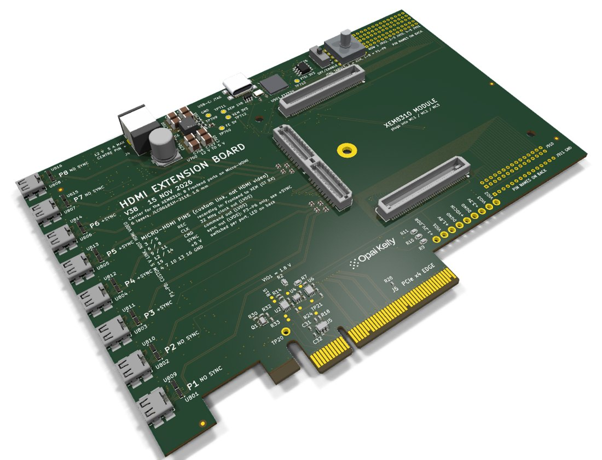
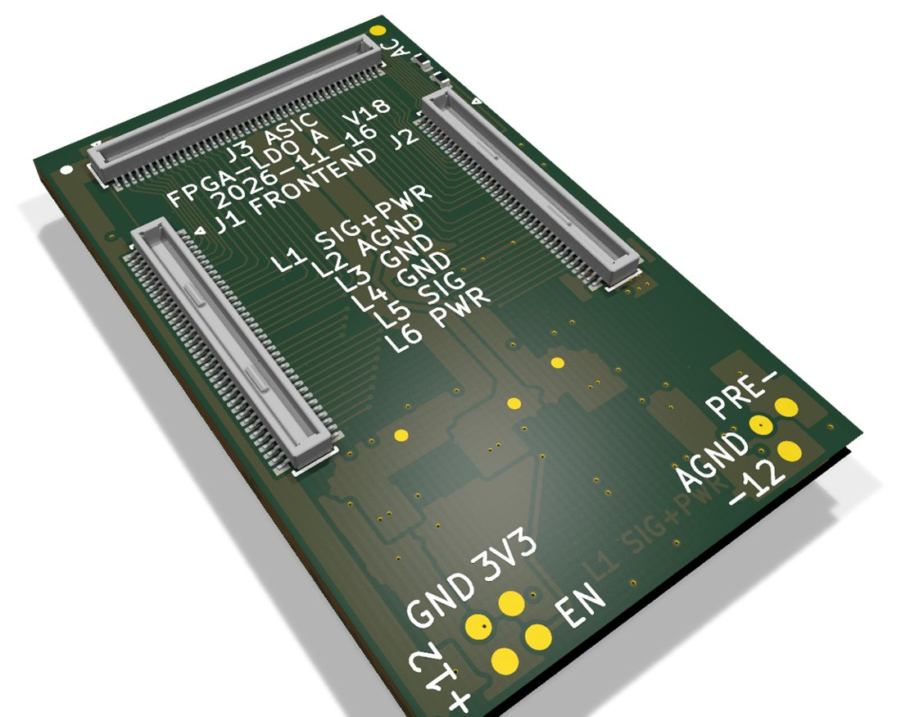
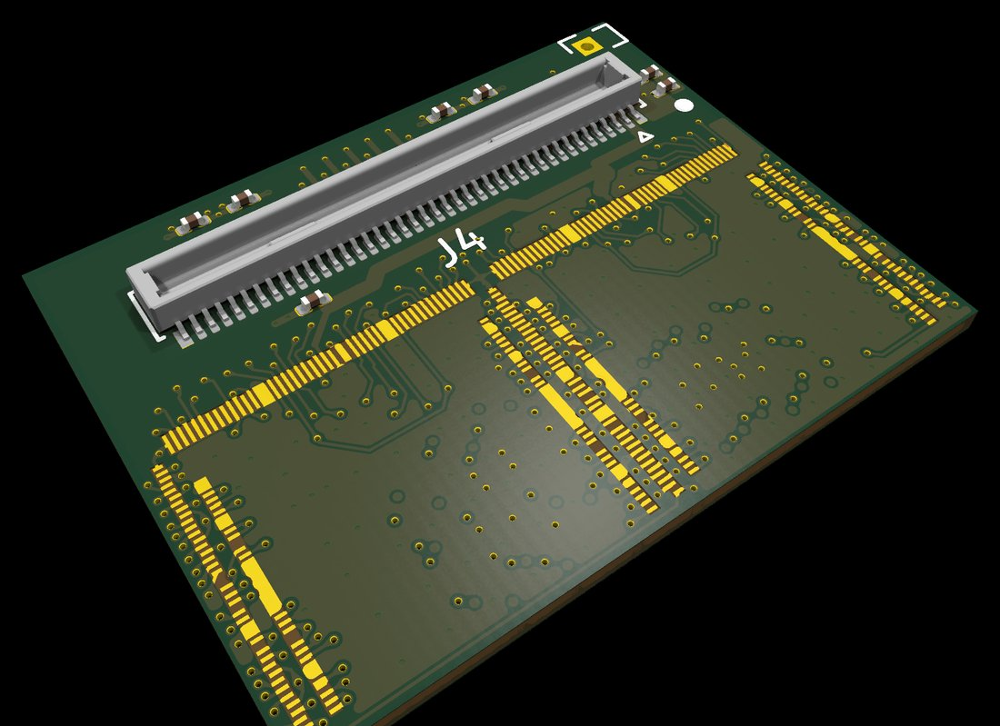

Datasheet · Section 1 · Draft V1
1System overview

| What it does | Records electrical activity from the brain through thin probes, and can also deliver small stimulation currents |
| Size | Up to 8 heads (small board stacks worn on the animal); each head holds 8 recording chips; each chip has 512 recording and 128 stimulation channels |
| Total | Up to 64 chips, 32,768 recording channels |
| Connection to the PC | One plug-in board in the PC (the HDMI Extension Board), with one Micro-HDMI cable to each head |
| Power | One 12 V adapter powers everything; each head gets 5 V through its cable |
| Status | Design finished and checked on paper; no board has been built or measured yet |
How to read this document. Part A (the datasheet) explains how the system works and what each board does. Part B (the user guide) is a step-by-step guide to assembling, powering and checking the system. Each section starts with a short “In short” summary. Grey “Design details” boxes hold part numbers and engineering detail; you can skip them on a first reading. Abbreviations are explained the first time they appear, and all of them are listed in section B7. On the website, a word with a dotted underline shows its meaning when you point at it.
In short. A PC talks to one plug-in board, which sends a cable to each head on the animal. Each head is a small stack of five boards that carries eight custom recording chips.
1.1What the system does
The system records the tiny electrical signals of brain cells and can stimulate them with small currents. The recording is done by custom chips called ASICs (application-specific integrated circuits), designed for this project. Each ASIC connects to a thin probe with 512 recording sites, and 128 of those sites can also stimulate.
The ASICs sit on a head: a stack of small boards, about 23 × 47 mm, worn on the animal. One head carries eight ASICs. Each head connects to the PC end through one ordinary Micro-HDMI cable. The cable does not carry video; it carries the recorded data, timing signals and power.
At the PC end, the HDMI Extension Board plugs into a PC slot. It carries a ready-made computing module (the Opal Kelly XEM8310) and has eight Micro-HDMI sockets, so it can run up to eight heads. The module contains an FPGA (field-programmable gate array): a chip whose logic is set by a program that is loaded when it powers up.
The PC can talk to the HDMI Extension Board in two ways: through a USB cable to the module, or directly through the PC slot (PCIe, the PC's internal expansion slot). A third cable (USB-C) is only for loading programs into the FPGAs; this is called JTAG programming.
1.2Boards and versions
The system uses five custom circuit boards, one bought module and one bought cable per head. The version numbers below are the latest saved designs.
| # | Board and what it does | How many | Version (saved) |
|---|---|---|---|
| 1 | HDMI Extension Board: plugs into the PC, carries the XEM8310 module, sends power, timing and commands to every head and receives their data | 1 | V39 · edited 18 Nov 2026, 12:22 CST |
| 2 | Frontend FPGA board (“Frontend”): the head's controller. Its FPGA collects data from the eight ASICs and sends it down the cable | 1 per head | 14 layers V13, schematic V57 · edited 19 Nov 2026, 11:24 CST · test frame V3 |
| 3 | FPGA-LDO board, Option A: the head's base board. It makes the clean supply voltages the ASICs need and routes signals between the Frontend and the ASIC boards. (An LDO, low-dropout regulator, is a type of quiet voltage regulator.) | 1 per head | layout V24, schematic V43 · edited 19 Nov 2026, 11:46 CST · test frame V4 |
| 4 | ASIC board, bottom: holds two ASICs and passes all signals up to the top board | 2 per head | V15 · edited 19 Nov 2026, 07:44 CST (PCBWay) |
| 5 | ASIC board, top: holds two more ASICs | 2 per head | V15 · edited 19 Nov 2026, 07:43 CST (PCBWay) |
| – | Opal Kelly XEM8310 FPGA module (bought) | 1 | purchased module |
| – | Micro-HDMI cable, MyCableMart 3 ft, Micro-HDMI at both ends (bought) | 1 per head | chosen 16 Nov 2026 (section 2.6) |
The Frontend and the FPGA-LDO board are each made inside a test frame: a larger carrier board that holds the small board by break-off tabs and brings some of its lines out to a pin header, so the board can be checked on the bench before it is broken out (section B5). The HDMI Extension Board, the Frontend and the FPGA-LDO board also carry small bare test pads for a meter or oscilloscope probe. The ASIC boards have neither.
Not part of this system: the Direct LDO Carrier V6 (an earlier bench setup with the XEM8305 module) and FPGA-LDO Option B (archived 14 Nov 2026).
 Frontend FPGA board, 14 layers (V9 render; V13 adds 33 small test pads)
Frontend FPGA board, 14 layers (V9 render; V13 adds 33 small test pads)
FPGA-LDO board, Option A (V18 render; V24 adds 12 test pads and two resistors)
ASIC board, bottom (V11 render; V15 is 0.4 mm wider and marked BOTTOM) ASIC board, top (V11 render; V15 is 0.4 mm wider and marked TOP)
ASIC board, top (V11 render; V15 is 0.4 mm wider and marked TOP)1.3Connections between boards
Each link below is one cable or one board-to-board connector. In this document, connectors are named by their label printed on the board: J means connector, so “J3” is connector number 3 on that board. Board-to-board connectors in the head are Hirose DF40 parts: tiny plug-and-socket pairs that join two boards face to face.
| From → to | Connector | What travels on it |
|---|---|---|
| PC → XEM8310 module | USB socket on the module | Commands and recorded data |
| PC → HDMI Extension Board | J6, the PCIe card edge (4 lanes) | A faster path for commands and data, straight from the PC slot |
| PC → programming switch | J500, USB-C | Loading programs into the FPGAs (JTAG); switch SW600 picks which FPGA |
| XEM8310 → HDMI Extension Board | MC1, MC2, MC3 (the module's three connectors) | Each port's data, clock and commands; 12 V to the module; 3.3 V back from the module |
| HDMI Extension Board → head | Micro-HDMI ports P1–P8, one cable each | Recorded data (to the PC), clock and commands (to the head), programming lines, and 5 V power |
| Frontend → FPGA-LDO board | J1 + J2, two connectors, 140 contacts | ASIC data, clocks, settings and stimulation control; the head's 3.3 V supply |
| FPGA-LDO board → ASIC boards | J4 (ASIC1–4) and J3 (ASIC5–8), 80 contacts each | Everything each group of four ASICs needs: signals, nine supply voltages and ground |
| Bottom → top ASIC board | 80-contact connector | The same 80 lines, passed straight through |
Design details exact contents of each link
- PCIe x4 on J6: 4 lanes to XEM8310 MGT bank 225, 100 MHz reference clock, PERST#, SMBus, WAKE#.
- JTAG on J500: FT232H JTAG programmer; SW600 selects the XEM8310 or one of the eight Frontends.
- Micro-HDMI pins: 3/5 recording data (Frontend GTP transmitter → XEM GTY receiver); 6/8 32 MHz clock (LVDS); 9/11 command with SYNC (LVDS); 12/14 separate SYNC (ports 3–6 only); 2/15/17/18 JTAG; 19 = 5 V power.
- Frontend → FPGA-LDO:
VIN_3V3on J2.68–70;VIN_5Von J1.32 (not used by the FPGA-LDO board; it goes to a test point only). - Each 80-pin ASIC port: 64 signal, 9 supply, 6 ground (analog 42, 44; digital 3, 5, 46, 48), 1 analog input (AC_IN, pin 69). Pins 3 and 5 changed from not connected to digital ground in pin map V7 (16 Nov 2026). Pin map V8 (19 Nov 2026) gave each bottom ASIC board its own latch line on pin 61, so every ASIC board now has its own settings clock and its own latch.
1.4Design files
Each board's page on the project website, and the design files of the exact version this datasheet describes. The KiCad ZIP is the complete project (schematic, board layout and libraries) for KiCad 10 (the files were saved with KiCad 10 and do not open in KiCad 9). Fabrication files are what the board maker needs: Gerbers (the copper and drill drawings), the bill of materials (BOM), the part placement list, a table that says where pin 1 of each part goes, and the notes to paste into the order. For the Frontend and the FPGA-LDO board, the fabrication files are those of the board in its test frame, because the frame is the panel in which the board is made and assembled. The HDMI Extension Board's fabrication files (order files V1) were made from the unchanged V39 board, so they include its test pads. Edit times are those of the saved files.
| Board | Website | KiCad project | Schematic | Fabrication files |
|---|---|---|---|---|
| HDMI Extension Board V39 · edited 18 Nov 2026, 12:22 CST; order files V1 made 19 Nov 2026, 07:38 CST | Board page | KiCad ZIP | Gerbers, BOM, placement, pin-1 table, layers PDF, order note | |
| Frontend FPGA board, 14 layers V13 (schematic V57) · edited 19 Nov 2026, 11:24 CST; test frame V3 edited 11:24 CST, its order files made 11:27 CST | Board page | KiCad ZIP (board only), KiCad ZIP (board in its test frame) | Test frame: Gerbers, BOM, placement, pin-1 table, order notes | |
| FPGA-LDO board A, layout V24 (schematic V43) · edited 19 Nov 2026, 11:46 CST; test frame V4 edited 11:48 CST, its order files made 11:49 CST | Board page | KiCad ZIP (board only), KiCad ZIP (board in its test frame) | Test frame: Gerbers, BOM, placement, pin-1 table, layers PDF, order notes | |
| ASIC board, bottom, V15 · edited 19 Nov 2026, 07:44 CST | Board page | KiCad ZIP | Gerbers, BOM, placement, order notes | |
| ASIC board, top, V15 · edited 19 Nov 2026, 07:43 CST | Board page | KiCad ZIP | Gerbers, BOM, placement, order notes |
Pin map V8 (19 Nov 2026), the agreed list of which signal is on which connector pin: the 140 contacts between the Frontend and the FPGA-LDO board (CSV), the 160 ASIC port pins (CSV), and the matching list of FPGA pins for the Frontend's program, pin file V4 (XDC). The pin file has not yet been run through the FPGA tools (Vivado).
The board pages and files are the same ones the overview's board cards offer. No fabricator has reviewed these files yet, and nothing has been ordered. The XEM8310 module is a bought part; its documentation is at docs.opalkelly.com.